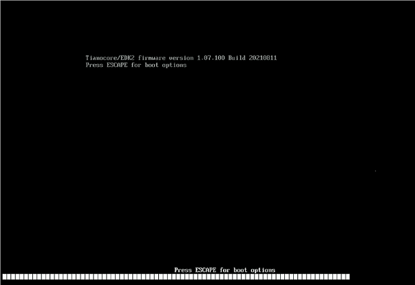
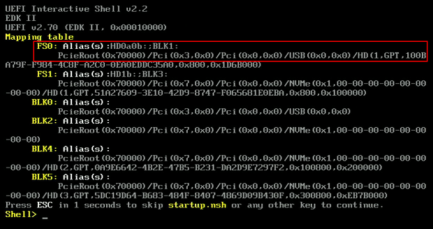

Flashing your EDKII/SCP firmwareUsing a UEFI ShellThe following describes how to flash your system’s EDKII and/or SCP firmware using a UEFI Shell, which requires an empty FAT32 USB drive and your AVA Developer Platform, at first, being turned off with all USB ports unused. IMPORTANT: It is strongly suggested that you have a DediProg and DB40 board before flashing the firmware using UEFI Shell. How to boot your system with UEFI Shell? 1. On a PC, download and extract the flashing tool and firmware files from here. 2. Copy the extracted files to the root directory of an empty USB drive with standard FAT32 format. WARNING: Irreversible data loss or OS damage may result when copying to the wrong device or location. 3. Make sure that your AVA Developer Platform is turned off with all USB ports unused. 4. Insert the USB drive containing the exracted files into your AVA Developer Platform, and then turn it on. 5. Wait (~50 to 60 seconds) for the following screen to appear, and then upon appearing, press ESC several times to enter the EDKII setup menu.  6. The EDKII setup menu appears. A. If you want to check the current versions of your EDKII and/or SCP firmware, do the following: Expand — EDKII firmware version: Your current EDKII firmware version is displayed on the upper-left corner of the EDKII setup menu. — SCP firmware version: Go to Device Manager > Platform Manager > Platform Board Information to check your current SCP firmware version, as exemplified below. IMPORTANT: SCP v.1.07, and not 1.08, is required for fully supporting all 6 DIMM slots, as 1.08 poses problems and can only support 2 DIMMs. B. If you want to flash your EDKII and/or SCP firmware, proceed to step 7. How to flash your EDKII/SCP firmware? 7. In the EDKII setup menu, go to Boot Manager > UEFI Shell, as demonstrated below. 8. The USB drive with the extracted files shall be displayed under FS0, as exemplified below.  — To flash your EDKII firmware, do the following: Expand A. In the UEFI Shell screen, type ‘FS0:‘ and press Enter to enter the USB directory. B. Type the following commands in sequence to execute fwu.nsh ‘ls’ [Enter] ‘cd ComHpcAlt_tianocore_atf_1.07.300.02b\’ [Enter] ‘ls’ [Enter] ‘fwu.nsh’ [Enter]update EDKII Shell> FS0: FS0:\\> ls FS0:\\> cd ComHpcAlt_tianocore_atf_1.07.300.02b\ FS0:\\> ls FS0:\\> fwu.nshOnce finished, reboot your AVA Developer Platform. — To downgrade your SCP firmware from v1.08, do the following: IMPORTANT: Downgrading from 1.08 to 1.07 is required for fully supporting all 6 DIMM slots, as 1.08 poses problems and can only support 2 DIMMs. Expand A. In the UEFI Shell screen, type ‘FS0:‘ and press Enter to enter the USB directory. B. Type the following commands in sequence to clear v1.08-related data. ‘ls’ [Enter] ‘cd ComHpcAlt_tianocore_atf_1.07.300.02b\’ [Enter] ‘ls’ [Enter] ‘XTools.efi nvp clr ‘ *[Enter]clear clearing 1.08 Shell> FS0: FS0:\\> ls FS0:\\> cd ComHpcAlt_tianocore_atf_1.07.300.02b\ FS0:\\> ls FS0:\\> XTools.efi nvp clr * C. Type ‘FS0:‘ and press Enter again to enter the USB directory, and then type the following commands in sequence to execute capsule.nsh ‘ls’ [Enter] ‘cd ComHpcAlt_tianocore_atf_1.07.300.02b\’ [Enter] ‘ls’ [Enter] ‘capsule.nsh’ [Enter]flashing SCP Shell> FS0: FS0:\\> ls FS0:\\> cd ComHpcAlt_tianocore_atf_1.07.300.02b\ FS0:\\> ls FS0:\\> capsule.nsh Once finished, reboot your AVA Developer Platform. — To update your SCP firmware from earlier versions, do the following: Expand A. In the UEFI Shell screen, type ‘FS0:‘ and press Enter to enter the USB directory. B. Type the following commands in sequence to execute capsule.nsh ‘ls’ [Enter] ‘cd ComHpcAlt_tianocore_atf_1.07.300.02b\’ [Enter] ‘ls’ [Enter] ‘capsule.nsh’ [Enter] flashing SCP Shell> FS0: FS0:\\> ls FS0:\\> cd ComHpcAlt_tianocore_atf_1.07.300.02b\ FS0:\\> ls FS0:\\> capsule.nsh Once finished, reboot your AVA Developer Platform. Once the update is finished, please double-check that the EDKII/SCP firmware is of the correct version by repeating step 6-A.